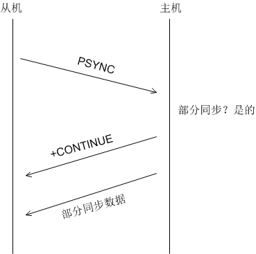

部分同步
如上所说，无论如何，redis 首先会尝试部分同步。部分同步即把积压空间缓存的数据，即更新记录发送给从机。
从机连接主机后，会主动发起 PSYNC 命令，从机会提供 master_runid 和 offset，主机验证 master_runid 和 offset 是否有效？ 验证通过则，进行部分同步：主机返回 +CONTINUE（从机接收后会注册积压数据接收事件），接着发送积压空间数据。
主机和从机之间的交互图如下：

syncWithMaster() 已经被设置为回调函数，当与主机建立连接后，syncWithMaster() 会被回调，这一点查阅在 connectWithMaster() 函数。首先如果该从机从未与主机有过连接，那么会进行全同步，从主机拷贝所有的数据；否则，会尝试进行部分同步。
// 连接主机 connectWithMaster() 的时候，会被注册为回调函数
void syncWithMaster(aeEventLoop *el, int fd, void *privdata, int mask) {
char tmpfile[256], *err;
int dfd, maxtries = 5;
int sockerr = 0, psync_result;
socklen_t errlen = sizeof(sockerr);
......
// 尝试部分同步，主机允许进行部分同步会返回 +CONTINUE，从机接收后注册相应的事件
/* Try a partial resynchonization. If we don't have a cached master
* slaveTryPartialResynchronization() will at least try to use PSYNC
* to start a full resynchronization so that we get the master run id
* and the global offset, to try a partial resync at the next
* reconnection attempt. */
// 函数返回三种状态：
// PSYNC_CONTINUE：表示会进行部分同步，在 slaveTryPartialResynchronization()
// 中已经设置回调函数 readQueryFromClient()
// PSYNC_FULLRESYNC：全同步，会下载 RDB 文件
// PSYNC_NOT_SUPPORTED：未知
psync_result = slaveTryPartialResynchronization(fd);
if (psync_result == PSYNC_CONTINUE) {
redisLog(REDIS_NOTICE, "MASTER <-> SLAVE sync: Master accepted a "
"Partial Resynchronization.");
return;
}
// 执行全同步
......
}
slaveTryPartialResynchronization() 主要工作是判断是进行全同步还是部分同步。
// 函数返回三种状态：
// PSYNC_CONTINUE：表示会进行部分同步，已经设置回调函数
// PSYNC_FULLRESYNC：全同步，会下载 RDB 文件
// PSYNC_NOT_SUPPORTED：未知
#define PSYNC_CONTINUE 0
#define PSYNC_FULLRESYNC 1
#define PSYNC_NOT_SUPPORTED 2
int slaveTryPartialResynchronization(int fd) {
char *psync_runid;
char psync_offset[32];
sds reply;
/* Initially set repl_master_initial_offset to -1 to mark the current
* master run_id and offset as not valid. Later if we'll be able to do
* a FULL resync using the PSYNC command we'll set the offset at the
* right value, so that this information will be propagated to the
* client structure representing the master into server.master. */
server.repl_master_initial_offset = -1;
if (server.cached_master) {
// 缓存了上一次与主机连接的信息，可以尝试进行部分同步，减少数据传输
psync_runid = server.cached_master->replrunid;
snprintf(psync_offset,sizeof(psync_offset),"%lld",
server.cached_master->reploff+1);
redisLog(REDIS_NOTICE,"Trying a partial resynchronization "
"(request %s:%s).", psync_runid, psync_offset);
} else {
// 未缓存上一次与主机连接的信息，进行全同步
// psync ? -1 可以获取主机的 master_runid
redisLog(REDIS_NOTICE,"Partial resynchronization not possible "
"(no cached master)");
psync_runid = "?";
memcpy(psync_offset,"-1",3);
}
// 向主机发送命令，并接收回复
/* Issue the PSYNC command */
reply = sendSynchronousCommand(fd,"PSYNC",psync_runid,psync_offset,NULL);
// 全同步
if (!strncmp(reply,"+FULLRESYNC",11)) {
char *runid = NULL, *offset = NULL;
/* FULL RESYNC, parse the reply in order to extract the run id
* and the replication offset. */
runid = strchr(reply,' ');
if (runid) {
runid++;
offset = strchr(runid,' ');
if (offset) offset++;
}
if (!runid || !offset || (offset-runid-1) != REDIS_RUN_ID_SIZE) {
redisLog(REDIS_WARNING,
"Master replied with wrong +FULLRESYNC syntax.");
/* This is an unexpected condition, actually the +FULLRESYNC
* reply means that the master supports PSYNC, but the reply
* format seems wrong. To stay safe we blank the master
* runid to make sure next PSYNCs will fail. */
memset(server.repl_master_runid,0,REDIS_RUN_ID_SIZE+1);
} else {
// 拷贝 runid
memcpy(server.repl_master_runid, runid, offset-runid-1);
server.repl_master_runid[REDIS_RUN_ID_SIZE] = '\0';
server.repl_master_initial_offset = strtoll(offset,NULL,10);
redisLog(REDIS_NOTICE,"Full resync from master: %s:%lld",
server.repl_master_runid,
server.repl_master_initial_offset);
}
/* We are going to full resync, discard the cached master structure. */
replicationDiscardCachedMaster();
sdsfree(reply);
return PSYNC_FULLRESYNC;
}
// 部分同步
if (!strncmp(reply,"+CONTINUE",9)) {
/* Partial resync was accepted, set the replication state accordingly */
redisLog(REDIS_NOTICE,
"Successful partial resynchronization with master.");
sdsfree(reply);
// 缓存主机替代现有主机，且为 PSYNC（部分同步） 做好准备
replicationResurrectCachedMaster(fd);
return PSYNC_CONTINUE;
}
/* If we reach this point we receied either an error since the master does
* not understand PSYNC, or an unexpected reply from the master.
* Reply with PSYNC_NOT_SUPPORTED in both cases. */
// 接收到主机发出的错误信息
if (strncmp(reply,"-ERR",4)) {
/* If it's not an error, log the unexpected event. */
redisLog(REDIS_WARNING,
"Unexpected reply to PSYNC from master: %s", reply);
} else {
redisLog(REDIS_NOTICE,
"Master does not support PSYNC or is in "
"error state (reply: %s)", reply);
}
sdsfree(reply);
replicationDiscardCachedMaster();
return PSYNC_NOT_SUPPORTED;
}
下面 syncCommand() 摘取部分同步的部分：
// 主机 SYNC 和 PSYNC 命令处理函数，会尝试进行部分同步和全同步
/* SYNC ad PSYNC command implemenation. */
void syncCommand(redisClient *c) {
......
// 主机尝试部分同步，允许则进行部分同步，会返回 +CONTINUE，接着发送积压空间
/* Try a partial resynchronization if this is a PSYNC command.
* If it fails, we continue with usual full resynchronization, however
* when this happens masterTryPartialResynchronization() already
* replied with:
*
* +FULLRESYNC <runid> <offset>
*
* So the slave knows the new runid and offset to try a PSYNC later
* if the connection with the master is lost. */
if (!strcasecmp(c->argv[0]->ptr,"psync")) {
// 部分同步
if (masterTryPartialResynchronization(c) == REDIS_OK) {
server.stat_sync_partial_ok++;
return; /* No full resync needed, return. */
} else {
// 部分同步失败，会进行全同步，这时会收到来自客户端的 runid
char *master_runid = c->argv[1]->ptr;
/* Increment stats for failed PSYNCs, but only if the
* runid is not "?", as this is used by slaves to force a full
* resync on purpose when they are not albe to partially
* resync. */
if (master_runid[0] != '?') server.stat_sync_partial_err++;
}
} else {
/* If a slave uses SYNC, we are dealing with an old implementation
* of the replication protocol (like redis-cli --slave). Flag the client
* so that we don't expect to receive REPLCONF ACK feedbacks. */
c->flags |= REDIS_PRE_PSYNC_SLAVE;
}
// 执行全同步：
......
}
主机虽然收到了来自从机的部分同步的请求，但主机并不一定会允许进行部分同步。在主机侧，如果收到部分同步的请求，还需要验证从机是否适合进行部分同步。
// 主机尝试是否能进行部分同步
/* This function handles the PSYNC command from the point of view of a
* master receiving a request for partial resynchronization.
*
* On success return REDIS_OK, otherwise REDIS_ERR is returned and we proceed
* with the usual full resync. */
int masterTryPartialResynchronization(redisClient *c) {
long long psync_offset, psync_len;
char *master_runid = c->argv[1]->ptr;
char buf[128];
int buflen;
/* Is the runid of this master the same advertised by the wannabe slave
* via PSYNC? If runid changed this master is a different instance and
* there is no way to continue. */
if (strcasecmp(master_runid, server.runid)) {
// 当因为异常需要与主机断开连接的时候，从机会暂存主机的状态信息，以便
// 下一次的部分同步。
// 1）master_runid 是从机提供一个因缓存主机的 runid，
// 2）server.runid 是本机（主机）的 runid。
// 匹配失败，说明是本机（主机）不是从机缓存的主机，这时候不能进行部分同步，
// 只能进行全同步
// "?" 表示从机要求全同步
// 什么时候从机会要求全同步？？？
/* Run id "?" is used by slaves that want to force a full resync. */
if (master_runid[0] != '?') {
redisLog(REDIS_NOTICE,"Partial resynchronization not accepted: "
"Runid mismatch (Client asked for '%s', I'm '%s')",
master_runid, server.runid);
} else {
redisLog(REDIS_NOTICE,"Full resync requested by slave.");
}
goto need_full_resync;
}
// 从参数中解析整数，整数是从机指定的偏移量
/* We still have the data our slave is asking for? */
if (getLongLongFromObjectOrReply(c,c->argv[2],&psync_offset,NULL) !=
REDIS_OK) goto need_full_resync;
// 部分同步失败的情况：
// 1、不存在积压空间
if (!server.repl_backlog ||
// 2、psync_offset 太过小，即从机错过太多更新记录，安全起见，实行全同步
// 我们知道，积压空间的大小是有限的，如果某个从机错过的更新过多，将无法
// 在积压空间中找到更新的记录
psync_offset 越界
psync_offset < server.repl_backlog_off ||
psync_offset > (server.repl_backlog_off + server.repl_backlog_histlen))
// 经检测，不满足部分同步的条件，转而进行全同步
{
redisLog(REDIS_NOTICE,
"Unable to partial resync with the slave for lack of backlog "
"(Slave request was: %lld).", psync_offset);
if (psync_offset > server. ) {
redisLog(REDIS_WARNING,
"Warning: slave tried to PSYNC with an offset that is "
"greater than the master replication offset.");
}
goto need_full_resync;
}
// 执行部分同步：
// 1）标记客户端为从机
// 2）通知从机准备接收数据。从机收到 +CONTINUE 会做好准备
// 3）开发发送数据
/* If we reached this point, we are able to perform a partial resync:
* 1) Set client state to make it a slave.
* 2) Inform the client we can continue with +CONTINUE
* 3) Send the backlog data (from the offset to the end) to the slave. */
// 将连接的客户端标记为从机
c->flags |= REDIS_SLAVE;
// 表示进行部分同步
// #define REDIS_REPL_ONLINE 9 /* RDB file transmitted, sending just
// updates. */
c->replstate = REDIS_REPL_ONLINE;
// 更新 ack 的时间
c->repl_ack_time = server.unixtime;
// 添加入从机链表
listAddNodeTail(server.slaves,c);
// 告诉从机可以进行部分同步，从机收到后会做相关的准备（注册回调函数）
/* We can't use the connection buffers since they are used to accumulate
* new commands at this stage. But we are sure the socket send buffer is
* emtpy so this write will never fail actually. */
buflen = snprintf(buf,sizeof(buf),"+CONTINUE\r\n");
if (write(c->fd,buf,buflen) != buflen) {
freeClientAsync(c);
return REDIS_OK;
}
// 向从机写积压空间中的数据，积压空间存储有「更新缓存」
psync_len = addReplyReplicationBacklog(c,psync_offset);
redisLog(REDIS_NOTICE,
"Partial resynchronization request accepted. Sending %lld bytes of "
"backlog starting from offset %lld.", psync_len, psync_offset);
/* Note that we don't need to set the selected DB at server.slaveseldb
* to -1 to force the master to emit SELECT, since the slave already
* has this state from the previous connection with the master. */
refreshGoodSlavesCount();
return REDIS_OK; /* The caller can return, no full resync needed. */
need_full_resync:
......
// 向从机发送 +FULLRESYNC runid repl_offset
}